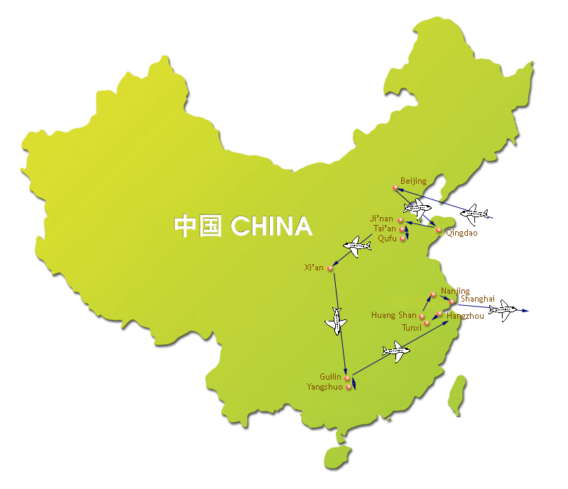

[ Home ] [ Travel ] [ Photography ] [ Pets ] [ Games] [ Rowing] [ Physics ]


A Visit to Mainland China - Itinerary
Travel
Cruises
Past Cruises (Diaries)
Future Cruises
Rogues Galleries
Land Trips
Diaries (Land Trips)
Hawai'i - Big Island - 04'01
Hawai'i - Maui - 05'02
Hawai'i - Big Island - 04'03
Hawai'i - Kaua'i - 09'04
Hawai'i - Big Island - 04'06
Hawai'i - Maui - 04'06
Mainland China - 05'07
Phoenix, Arizona - 12'07
Greek Isles - 05'08
Hawai'i - Kaua'i - 09'08
Hawai'i - Big Island - 09'09
Hawai'i - Maui - 05'12
Hawai'i - Big Island - 04'13
Ireland - 08'13
Mexico - Cancun 11'13
France/Belgium/Lux 07'15
Hawai'i - Big Island - 05'17
England / Wales - 06'17
Hawai'i - Big Island - 09'19
Photography
Cameras
Underwater
Pets
Tara
Blackie
Whitey
Muffy
Ollie
Rusty
Fluffy
Rufus&Dufus
Games
Rowing
Physics
Trip Itinerary

| Day | Date | Description |
|---|---|---|
| 1,2 | May 5,6 | Flight to Beijing - Calgary => Vancouver, Vancouver => Beijing, first Chinese dinner |
| 3 | May 7 | First day in Beijing - Tian'an Men Square, Forbidden City, Temple of Heaven, Beijing Opera |
| 4 | May 8 | Second day in Beijing - Great Wall at Ba Da Ling, Ming Tombs (Wanli Emperor) |
| 5 | May 9 | Third day in Beijing - Babaoshan Cemetery, Lama Temple, Summer Palace, Yuanming Yuan |
| 6 | May 10 | Beijing to Qingdao - morning on our own, Matteo Ricci grave, silk market, flight to Qingdao |
| 7 | May 11 | A day in Qingdao - Tsing Tao brewery, governor's mansion, naval museum, KMT headquarters |
| 8 | May 12 | Qingdao to Ji'nan - bus to Ji'nan, Li Qingzhau park, Daming Hu park, night market |
| 9 | May 13 | A day in Qufu and Tai'an - bus to Qufu, Confucius Temple, Mansion and Forest, bus to Tai'an |
| 10 | May 14 | On top of Mount Tai, Ji'nan to Xi'an - gondola up Tai Shan, top of the mountain, Dai Temple, flight to Xi'an |
| 11 | May 15 | Warriors in Xi'an - terra-cotta warriors, Shaanxi History Museum, Wild Goose Pagoda |
| 12 | May 16 | Xi'an to Guilin - time on our own, Muslim Quarter, Grand Mosque, flight to Guilin |
| 13 | May 17 | Down the Li River to Yangshuo - Li River cruise, afternoon on our own, "Impressions" water show |
| 14 | May 18 | Back to Guilin - countryside tour, Reed Flute Cave, night on the town |
| 15 | May 19 | Guilin to Hangzhou - morning on our own, Elephant Trunk Hill, Fubo Hill, pearl factory, flight to Hangzhou |
| 16 | May 20 | Hangzhou to Huangshan (Tunxi) - Yue Fei grave, West Lake boat trip, tea plantation, bus to Tunxi, "ancient street" tour |
| 17 | May 21 | Up the Mountain to Huang Shan Xihai - Hongcun historic town, ride through the countryside, gondola up the mountain |
| 18 | May 22 | A Drive to Nanjing - early morning sunrise, explore the mountain, bus to Nanjing, evening walk |
| 19 | May 23 | A Day in Nanjing - KMT presidential offices, Sun Yat Sen mausoleum, Yuhuatai Museum, exam center |
| 20 | May 24 | Nanjing to Shanghai - bus to Shanghai, Jade Buddha Temple, Yu Gardens, Chinese acrobats |
| 21 | May 25 | A Day in Shangai - walking the Bund, silk factory, Shanghai Museum, CCP congress site, gift exchange |
| 22 | May 26 | Back to Calgary - morning on our own, Shanghai => Vancouver, Vancouver => Calgary |